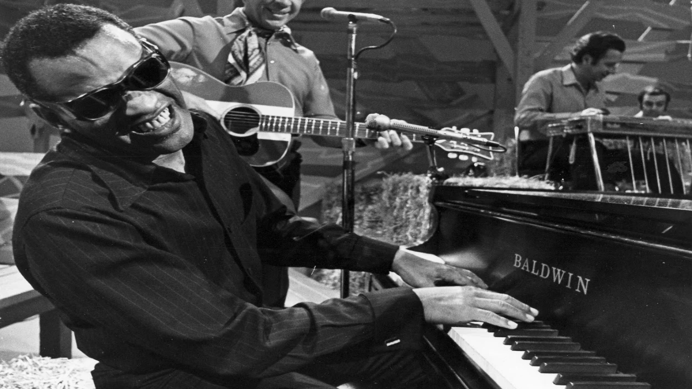

Ray Charles: de su niñez sin esperanza a la fortuna y todos los premios del mundo
A casi 20 años de su muerte, un repaso por la vida del genio que con su música y su voz siguen maravillando en todo el planeta
La Versatilidad Musical de Ray Charles

(Ray Charles Robinson; Albany, 1932 - Los Ángeles, 2004) Cantante, instrumentista y compositor estadounidense, una de las figuras más relevantes de la música negra del siglo XX. En su repertorio puede hallarse desde el blues más tradicional o el gospel hasta el jazz o el soul, estilo en el que desarrolló una vertiginosa carrera. Es difícil catalogar sus cientos de grabaciones, quizá por el eclecticismo que siempre le caracterizó. Durante su larga carrera fue galardonado con doce premios Grammy.
La Vida y Educación Musical de Ray
Ciego desde los siete años, Ray Charles aprendió a leer y componer música en el sistema Braille. Estudió en Florida, en un Instituto de San Agustín, y desde muy niño participó en distintos eventos musicales. Por influencia de su ídolo King Cole, fundó en Seattle, en 1948, un trío llamado McSon Trio (también conocido como Maxim Trio). En 1950 se asoció con Lowell Fulson, cantante y guitarrista de blues y acaso su mejor revulsivo, con quien inició una serie de giras por el país.